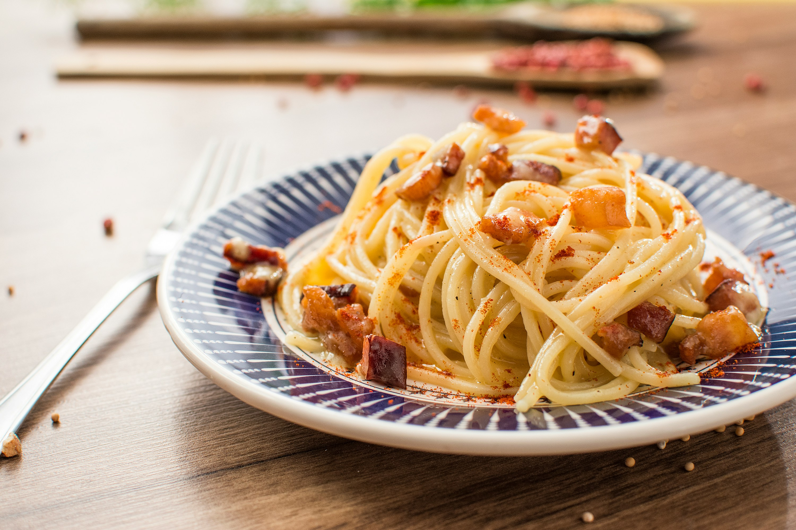

Home
Carbonara Recipe

Description
Carbonara is a classic Italian pasta dish made with eggs, cheese (usually
Pecorino Romano), pancetta or bacon, and black pepper. It's creamy,
savory, and quick to make—without using any cream.
Ingredients
- 200g spaghetti
- 2 large eggs
- 1/2 cup grated Parmesan
- 100g pancetta or bacon, diced
- 2 cloves garlic (optional)
- Salt and black pepper to taste
Steps
-
Boil spaghetti in salted water until al dente. Save 1/2 cup of pasta
water, then drain.
-
In a pan, cook diced pancetta or bacon until crispy. (Add garlic for
extra flavor, then remove it.)
- In a bowl, mix eggs, grated cheese, and black pepper.
-
Remove the pan from heat. Add the hot pasta to the bacon, then quickly
mix in the egg mixture. Stir well to make it creamy. Add a bit of saved
pasta water if it's too dry.
- Top with extra cheese and black pepper. Serve warm.